**Switzerland: a minimal spillover from a 200bp US rate rise**
The main impact of a 200 basis-point (2.00 percentage-point) rise in United States interest rates on Switzerland is a 0.06% drop in GDP by the 11th quarter — a limited spillover. Switzerland ranks 10th of the countries modelled by absolute GDP effect, and the model band is "minimal." The shock is a US monetary tightening, transmitted to Switzerland through global financial conditions rather than through any domestic policy action. The peak GDP loss is −0.0562% of GDP, reached in Q11, and the path is slow-burning: essentially nothing in Q1 (−0.0007%), building through the first year, and still −0.0164% below baseline at Q20. There is no sign change in the GDP path, so the level of output stays below baseline throughout the horizon even as the growth-rate effect fades.
**Demand and trade.** Household consumption falls in step with output, peaking at −0.0355% in Q11 and still −0.0111% below baseline at Q20. Private investment is the hardest-hit domestic demand component: it peaks at −0.1778% in Q10, a response to the higher global cost of capital, and only mostly fades by Q18. Net exports — the trade balance, since this model does not split imports from exports — move the other way, peaking at +0.0711% in Q9 and remaining +0.0252% above baseline at Q20, as the stronger currency cheapens imports and the domestic slowdown curbs import demand. Government spending rises modestly, peaking at +0.0112% in Q11, a small automatic-stabiliser offset. Government debt falls relative to baseline, peaking at −0.0193% in Q17, consistent with the primary balance improving as the economy slows less than the fiscal impulse.
**External / FX.** The real exchange rate — currency strength — appreciates sharply, peaking at +0.3034% in Q8 and still +0.0998% above baseline at Q20. This is the cleanest transmission channel: higher US rates pull global capital toward dollar assets, and the Swiss franc appreciates in real terms. That appreciation lines up exactly with the net-exports result: the trade balance improves because the stronger franc lowers the relative price of imports, even as it makes Swiss exports less competitive. The two series peak close together (Q8 for the exchange rate, Q9 for net exports), which is the model's way of saying the currency move is doing the work.
**Labour.** Employment falls, peaking at −0.0422% in Q14 and still −0.0261% below baseline at Q20. Unemployment rises in parallel, peaking at +0.0327 percentage points in Q14 and remaining +0.0226pp above baseline at Q20. Real wages, by contrast, rise: they peak at +0.0543% in Q13 and stay +0.0262% above baseline at Q20. This is the standard real-wage response to a demand shock — nominal wages are sticky, inflation falls faster than wages, so real wages rise even as employment falls. The labour market therefore adjusts through quantities (fewer jobs) rather than through prices (real wages).
**Prices.** CPI inflation rises initially, peaking at +0.021 percentage points in Q3, then crosses below baseline at Q10 and ends at −0.0056pp by Q20. Domestic inflation follows the same shape, peaking at +0.0147pp in Q3 and turning negative at Q10, ending at −0.0039pp. Firms' marginal cost falls throughout, peaking at −0.0336% in Q11 and still −0.0098% below baseline at Q20. The initial inflation bump is a currency-pass-through effect — the stronger franc raises the relative price of imports — but it is quickly overtaken by the demand-driven disinflation, which is why both inflation measures turn negative in the second year.
**Financial conditions.** The local policy rate rises slightly, peaking at +0.0192pp in Q7, then turns negative at Q14 and ends at −0.0149pp by Q20 — the Swiss National Bank initially leans against the imported tightening, then eases as domestic slack builds. Government yields move in a curve-twist pattern: the 2-year yield rises to +0.0169pp in Q3 before turning negative at Q10 and ending at −0.0137pp; the 5-year yield peaks at −0.0116pp in Q15; the 10-year yield is below baseline throughout, peaking at −0.0080pp in Q14. Bond prices fall sharply, peaking at −0.5558% in Q8, then recover and turn positive at Q16, ending +0.1045% above baseline. Equity prices fall, peaking at −0.3323% in Q8 and still −0.0716% below baseline at Q20. Tobin's Q — the value of installed capital — falls, peaking at −0.1245% in Q10 and mostly fading by Q18. House prices decline steadily, peaking at −0.0488% in Q18 and still −0.0478% below baseline at Q20. Bank credit contracts, peaking at −0.0224% in Q17 and still −0.0209% below baseline at Q20. The lending spread widens only marginally, peaking at +0.0002pp in Q17 — a rounding-error-sized move that confirms the credit channel is not the main story here.
**Sectoral and capital.** Manufacturing GDP is hit hardest of the production sectors, peaking at −0.0953% in Q9 and still −0.0296% below baseline at Q20 — the tradable sector bears the brunt of the currency appreciation. Services GDP falls less, peaking at −0.0445% in Q11 and still −0.0130% below baseline at Q20. The capital stock declines very slowly, peaking at −0.0089% in Q20, reflecting the cumulative effect of weaker investment; it is the slowest-moving series in the set.
**Timing.** The GDP hit is largest in Q11 at −0.0562%, and it has not faded by Q20 — the level remains −0.0164% below baseline. The peak is late because the transmission runs through investment and the exchange rate, both of which take time to build. The equity and bond-price peaks arrive earlier, in Q8, and the inflation peak earlier still, in Q3. The labour-market peaks arrive later, in Q14. So the sequence is: prices and financial conditions first, then output, then employment.
**Close.** These are model impulse responses to a 200bp US rate rise, not forecasts. They describe how the modelled Swiss economy deviates from its baseline under this specific shock, holding everything else constant. The headline number — a 0.06% GDP loss at peak — is small in absolute terms, which is why the band is "minimal," but the composition matters: a sharp currency appreciation, a weak investment response, and a persistent drag on manufacturing output.
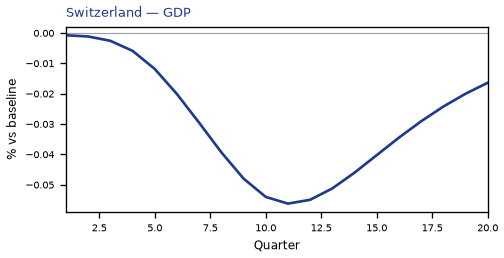
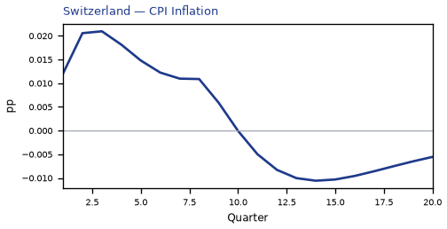
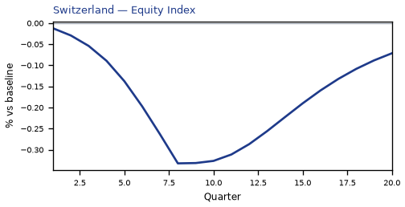
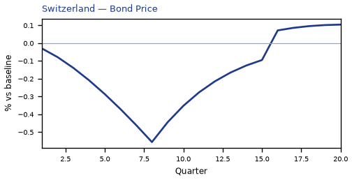
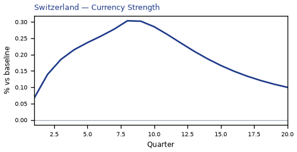
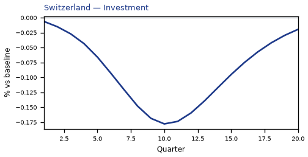
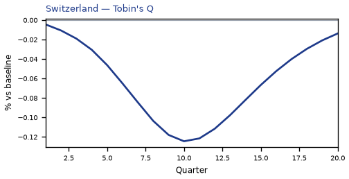
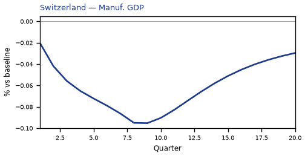
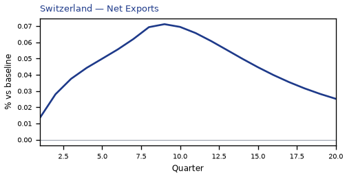
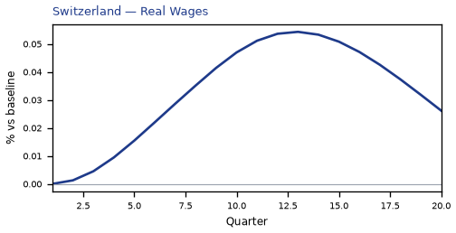
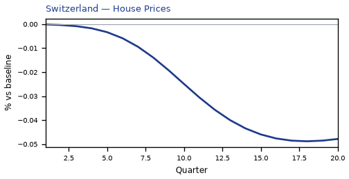
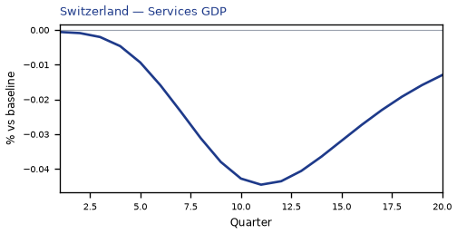
source=live · global_macro_v5 · contract v6 · Q1–Q20 JSON · not financial advice